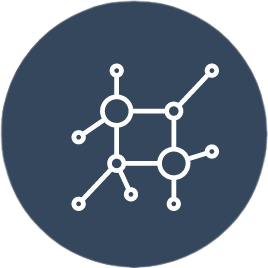

Curcumin
Learn
Shop
Where It Begins
Ensure lasting health and well-being of humanity by preempting diseases and offering preventive, precision, natural medication.
Why is our Curcumin, the only Holistic one in the world?
The answer is simple.
To begin with, our curcumin comes from the best quality turmeric, which is grown in the North-eastern parts of India, which are acclaimed to be naturally organic farming regions of the world! Therefore, the core input material in our products is superior, naturally, from which emanates the superiority of all our products. We retain the complete goodness of the curcumin through our innovative and most importantly a non-solvent extraction method, which makes our product 100% Water Soluble. Further, our patented precision-nano-technology ensures that the Curcumin is 100% Bio-Available.
As a result, our Holistic Curcumin delivers all of the numerous health benefits which the natural Curcumin is supposed to
Turmeric grown in
Naturally Organic
regions
Non-solvent extraction Method
to get the the purest form of curcumin

Proprietary nano technology
to attain precision
100% Bio-available, high
efficacy, natural medicine
Right From The Source
Where does it all begin?
To begin with, our curcumin comes from the best quality turmeric, which is grown in the North-eastern parts of India, which are acclaimed to be naturally organic farming regions of the world! Therefore, the core input material in our products is superior, naturally, from which emanates the superiority of all our products
Actionable and Sustainable
Sustainability begins where we stand. We own the farms and work with carefully selected farmer partners who share our long-term perspective. The produce is superior, safe, traceable and grown in an ethical, consistent and sustained manner.Nature keeps changing and so do we. We innovate withnew age and precision farming methods for higher yieldsin shorter crop cycles, eco-friendly techniques that ensure a zero harm environment and are consistently output ready for extraction through the year. The disruptive non-solvent extraction is chemical residue-free. This ensures a better commercial realization for the farmer & their families and a smile from Mother Earth. The sustainability story continues. 50% of the packaging is biodegradable and the rest is either reusable or recyclable. The packs are tamper-evident, child-proof and shelf life protected, assuring total safety.
Owning Tracibility
With ownership of the entire value chain, we document, record and identify the product right through. From seed to consumption, there is complete traceability. Ask us when, ask us where, we know
Extract Without Harm
The naturally pure produce must be taken forward with a pure, natural extraction process. We have a unique and proprietary aqueous extraction process. This allows the high levels of purity to be maintained and is designed to global standards.
How different is this from the conventional method?
The existing solution defeats its reason for existence as it evaporates some of the more potent but volatile compounds and leaves behind harmful chemical residues. Aqueous extraction involves a higher outlay which results in the purest and safest extracts. The potent compounds remain ensuring a higher efficacy, and there are no chemical residues.
NANO TO BE BIOAVAILABLE
The next step in creating the formulation is no less. The formulation unit harnesses proprietary Nano technology for higher saturation solubility, swift dissolution, 100% bioavailability and quicker therapeutic action. For instance, the particle size is below 50 nanometers in as part of our patented technology. This ensures that it is retained despite body metabolism and Nano sized particles evade the digestive enzymes and enter the blood stream reaching parts of the body that need it
IN TEST WE TRUST
We are at the intersection of nature and efficacy. The tests are at the highest levels at Laboratories of international repute. A promise that lives up even in the generics range.For instance the Laboratory testing showed serum levels by more than ve times with our Nanocapsulated generics over conventional generics
Buy Now